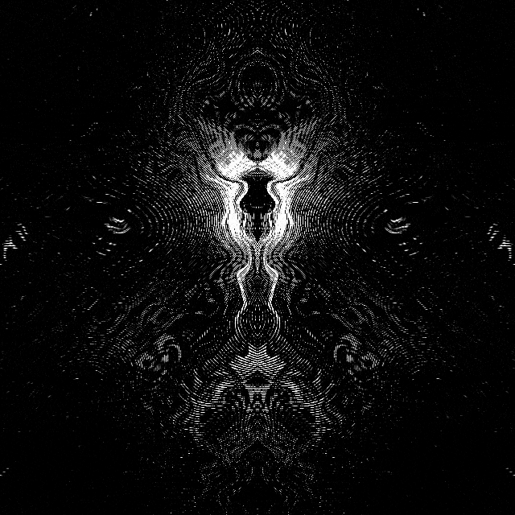
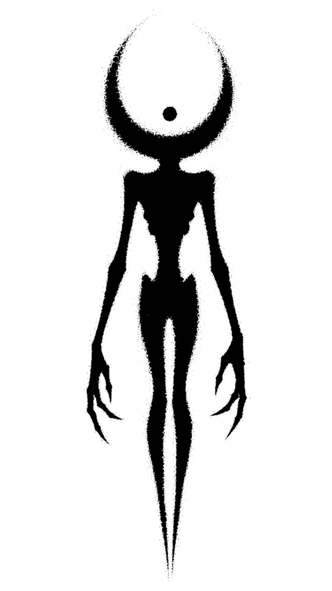
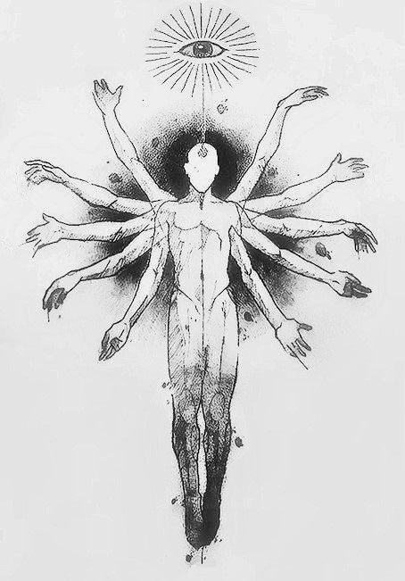
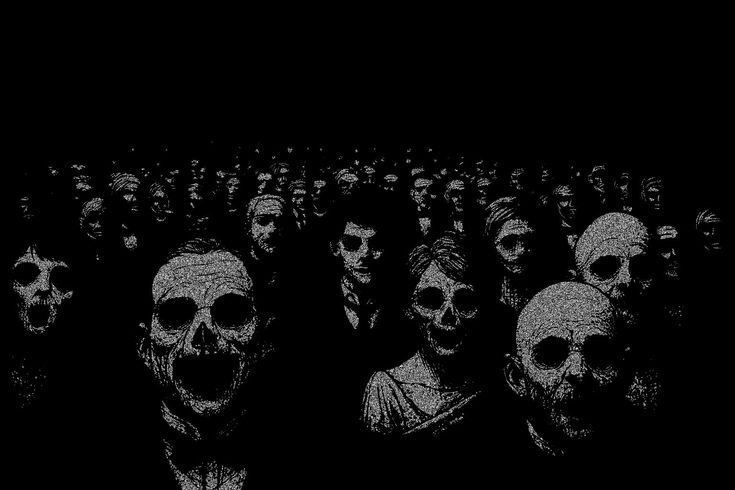
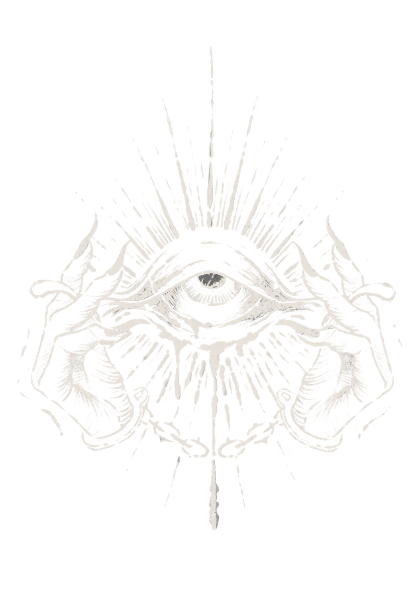
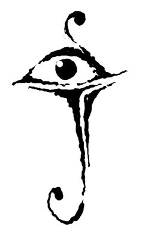
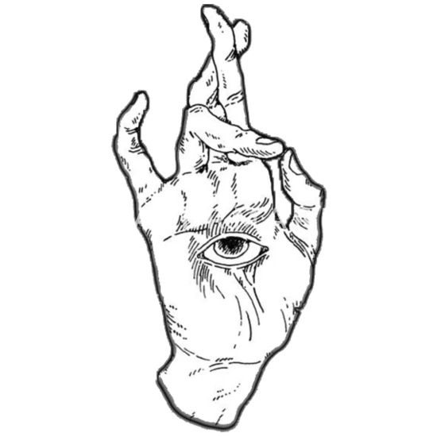
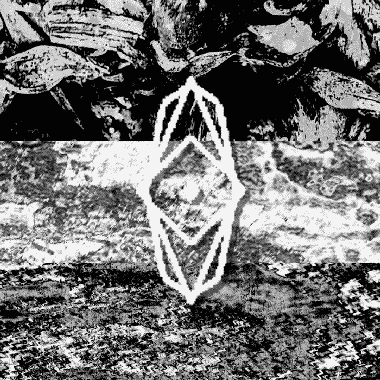
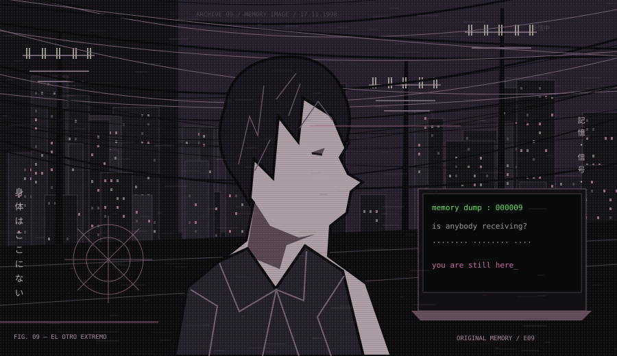
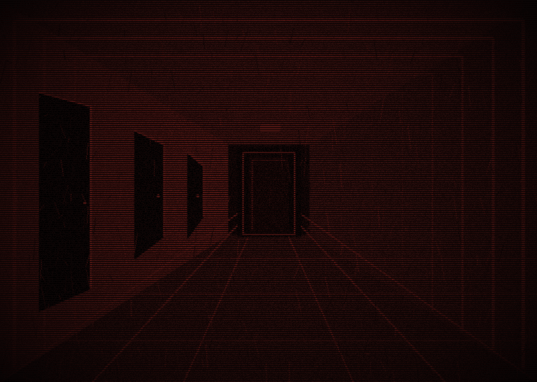

Al otro lado





restos
voces
huellas
vestigios
cintas
Fragmento visual recuperado / 009
> connection established
¿Sigues ahí_?
La estación dejó de transmitir hace 27 años.
Alguien olvidó apagar algo.

entre una voz y otra,
todavía existe un lugar.
[ gate 01 / acceso restringido ]
Si recuerdas este lugar,
no es la primera vez que estás aquí.
no respondas si escuchas tu nombre.

rastros
Este archivo no está abandonado.
Solo ha dejado de recibir visitas.
Fragmentos recuperados
todo el archivo ↗Registro de actividad
- buscando señal...
- conexión restablecida
- el archivo recuerda tu visita
- hay alguien al otro lado_
fragmentos
Lo que queda.
Los archivos no están ordenados. Algunos no quieren estarlo.
FIN DEL ÍNDICE RECUPERABLE · NIVEL 00
FRECUENCIA 09.8 / SEÑAL RESIDUAL
¿Hay alguien?
Reproducción de la última transmisión. El receptor sigue abierto.
17.11.1998 — 03:33:09
lo recibido
«Si esto llega a alguien… no bajéis al subsuelo.
Lo que responde tiene nuestra voz.»
transcripción
03:32:51 [interferencia]
03:33:02 ¿Por qué la cámara sigue grabando?
03:33:07 No somos nosotros.
03:33:09 [fin de la transmisión]
LIBRO DE VISITAS / COPIA LOCAL
Deja una señal.
Para que alguien sepa que estuviste aquí.
NO HAY MÁS PUERTAS
Te estábamos esperando.
La señal no venía del exterior.
lo que ocurrió
El 17 de noviembre de 1998 desconectamos la estación.
La transmisión continuó durante nueve minutos.
Después, alguien empezó a contestar.
Ahora ya sabes de dónde viene tu eco.